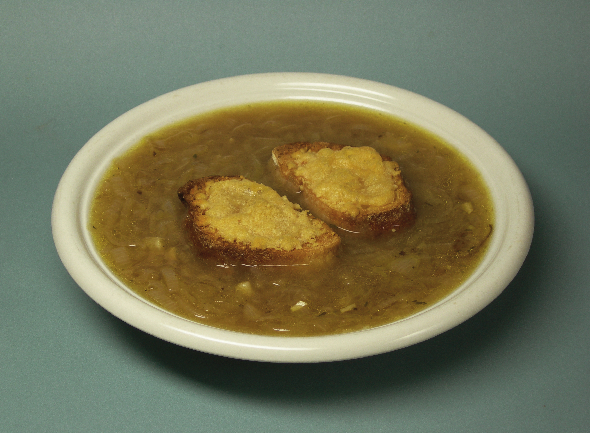

Sopa de Cebolla

Descripción
La sopa de cebolla es un clásico de la gastronomía francesa. Este plato tradicional combina la dulzura caramelizada de las cebollas con un rico caldo de carne, coronado con pan crujiente y queso gratinado. Un plato perfecto para los días fríos que conquistará tu paladar con su sabor intenso y reconfortante.
Ingredientes
Preparación
-
1
Preparar las cebollas
Pelar y partir las cebollas en rodajas finas.
-
2
Rehogar
Rehogar las cebollas con la mantequilla, sal y pimienta a fuego lento hasta que estén transparentes sin dorarse.
-
3
Añadir harina
Añadir la harina sin dejar de remover.
-
4
Cocinar la sopa
Ponerlo en una cazuela con el caldo, el tomillo y el laurel. Dejar cocer a fuego lento durante unos 15 minutos para que todos los sabores se integren perfectamente.
-
5
Gratinar
Poner las rebanadas de pan encima de la sopa en los boles individuales, espolvorear generosamente el queso y gratinar al horno.
Consejos del Chef
Para un sabor más intenso, puedes añadir un chorrito de vino blanco seco después de rehogar las cebollas.
Utiliza queso gruyére de buena calidad para el gratinado, marca la diferencia.
No apresures el proceso de caramelización de las cebollas, la paciencia es clave.